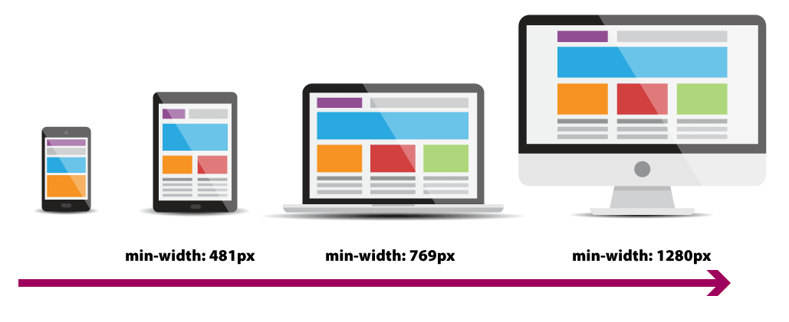

Responsive Web Design
Using the CSS grid
What is Responsive?
- Before Mobile devices you only had to worry about the screen resolution of desktops and laptops.
- In the mid '00 web browsers started to be introduced in smartphones and this was a game changer.
- Many times 2 versions of a website were created. One for Desktop and one for mobile.
- Around 2010 the term Responsive was introduced by Ethan Marcotte. It described content that needed to adapt to its viewport by having one website that provided a seamless experience in any device.
Most common Device sizes

Elements of Responsive Design
- A flexible, grid layout system.
- Flexible images and media (using relative units)
- Breakpoints.
- Media queries.
Breakpoints
- Points in the width of the website that will respond to different styles established on the media queries.
Media Queries
- CSS has built in function that let you decide what CSS to display and allows you to render content for different device sizes and purposes.
- The most used media queries are print, screen and speech.
- The screen media queries work with the breakpoints to change the layout of the website.
Media Queries

What are Screen Media Queries?
- Media query is a CSS technique that uses the @media rule with style properties for that particular condition.
- @media only screen and (min-width: 600px) {
body {
background-color: lightblue;
}
}
The background will be applied to any device that has a minimun width of 600px and up. This is called a Breakpoint - Start from mobile-up
Most common media queries:
- min-width: 480px Mobile-landscape (and larger)
- min-width: 768px Tablet-portrait (and larger)
- min-width: 992px Tablet-landscape (and larger)
- min-width: 1200px Laptops (and langer)
Using min-width:
When using min-width, you start adding CSS for the smaller viewport and create media queries for bigger devices.

Using max-width:
When using max-width, you start adding CSS for the larger viewport and create media queries for smaller devices.
Key Points in Responsive Design:
- Use relative widths instead of pixels.
- Use pixels only in elements you don't want to scale like logos and buttons.
- The use of media queries allows you to set different layouts for different screen sizes.
- You can add the media query at the bottom of your css file or you can add a separate one for each viewport.
<meta name="viewport" content="width=device-width, initial-scale=1">
- Add this meta inside your head tag to adjust the page to recognize the diffent viewports
- Without a viewport meta tag, mobile devices render pages at typical desktop screen widths, and then scale the pages to fit the mobile screens. Setting the viewport enables you to control the width and scaling of the viewport.
- The width=device-width key-value pair sets the width of the viewport to the width of the device.
- The initial-scale=1 key-value pair sets the initial zoom level when visiting the page.
Responsive Images
Not all images work well in all viewports. Sometimes we need to create more than one version of the image.
<img src="test-image-800w.jpg" alt="This is a test image">
Image Source sets
A source set allows you to assign a different image for different viewports.
<picture>
<source media="(min-width:650px)" srcset="img_pink_flowers.jpg">
<img src="img_orange_flowers.jpg" alt="Flowers" style="width:auto;">
</picture>